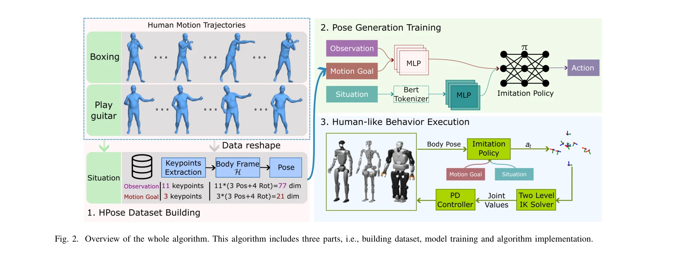
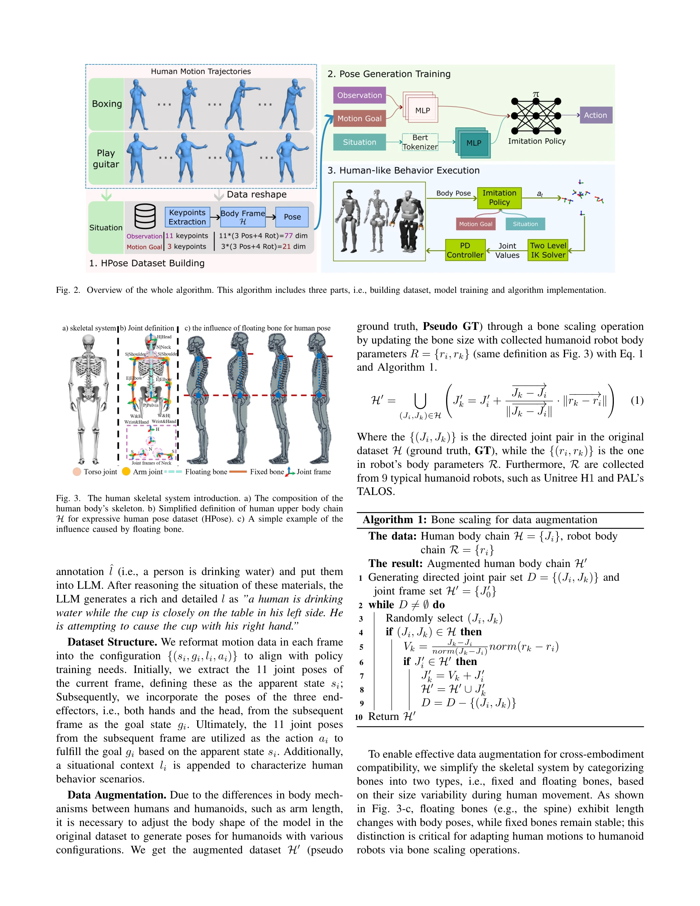

Essence

Fig. 1.
HuBE는 인간 행동의 유사성(similarity)과 적절성(appropriateness)을 모두 만족하는 이족 로봇용 양단계 폐루프 프레임워크를 제안하며, 뼈 스케일링 기반 데이터 증강을 통해 이기종 로봇 간 교차-구현체(cross-embodiment) 적응을 실현한다.
저자: Shipeng Lyu, Fangyuan Wang, Weiwei Lin, Luhao Zhu, David Navarro-Alarcon, Guodong Guo | 날짜: 2025-08-26 | DOI: 10.48550/arXiv.2508.19002
Fig. 1.
HuBE는 인간 행동의 유사성(similarity)과 적절성(appropriateness)을 모두 만족하는 이족 로봇용 양단계 폐루프 프레임워크를 제안하며, 뼈 스케일링 기반 데이터 증강을 통해 이기종 로봇 간 교차-구현체(cross-embodiment) 적응을 실현한다.

Fig. 2. Overview of the whole algorithm. This algorithm includes three parts, i.e., building dataset, model training and

Fig. 3. The human skeletal system introduction. a) The composition of the
총평: HuBE는 인간형 로봇 행동 생성에 행동 적절성 개념을 처음 체계적으로 도입하고, 폐루프 아키텍처와 bone scaling 기반 교차-구현체 적응을 통해 실무적 가치 높은 솔루션을 제시한다. 다만 LLM 주석 신뢰성 검증과 더 광범위한 플랫폼 실험이 진행된다면 영향력이 한층 강화될 것으로 예상된다.